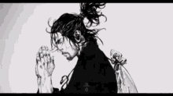

Vagabound
Vagabond (バガボンド Bagabondo?) é uma série de mangá escrita e ilustrada por Takehiko Inoue, baseada no romance Musashi, de Eiji Yoshikawa, que conta a história do samurai Miyamoto Musashi (宮本武蔵? 1584–1645).[1] O mangá começou a ser serializado na revista semanal Morning em 1998, com os capítulos lançados e compilados em 37 volumes tankobon pela editora Kodansha até julho de 2014. Atualmente Vagabond é licenciado e publicado no Brasil pela editora Panini Comics. Vagabond ganhou no ano de 2000 o Prêmio de Mangá Kōdansha e em 2002 o Grande Prêmio no Prêmio Cultural Osamu Tezuka, e já vendeu mais de 82 milhões de cópias em todo o mundo.

- Mangá
- Escrito e ilustrado por Takehiko Inoue, Vagabond é baseado no romance de Eiji Yoshikawa de 1935 Musashi e é serializado na revista Morning desde 1998. Ele começou a série Real na revista Young Jump em 2001, e atualmente o publica ao lado de Vagabond. A partir de julho de 2014, os capítulos de Vagabond foram compilados em 37 volumes tankobon e lançados pela editora Kodansha. No Brasil, foi licenciado pela editora Conrad e foram publicadas 44 edições (equivalentes aos 22 volumes originais) entre novembro de 2001 e setembro de 2006. Houve também, a publicação de Vagabond numa Edição de Luxo do formato original, e foram publicados 14 volumes entre setembro de 2005 e outubro de 2007, as complicações da Conrad nos anos seguintes levaram a série a ser cancelada em ambas as publicações. Posteriormente, foi licenciado pela editora Nova Sampa, e entre fevereiro e junho de 2014, apenas 4 volumes (15 ao 18) foram publicados, e veio a ser cancelado em setembro de 2015. Atualmente, é licenciado e publicado pela editora Panini desde fevereiro de 2016.[2] Dois artbooks da série foram lançados em 23 de outubro de 2006; Water contendo imagens coloridas do mangá e novas imagens, e Sumi (墨?) contendo novas imagens em preto e branco, bem como esboços iniciais.[3][4
- Recepções
- Em 2000, Vagabond ganhou o Grande Prêmio do Festival de Artes da Mídia do Japão. O seguinte é um extrato do discurso felicitando a Takehiko Inoue: "Desde Toyotomi a Tokugawa. Musashi Miyamoto cresceu em um período de mudança de grandes eras. O senhor Inoue tem tomado o poderoso Musashi que foi chamado às vezes de uma 'besta' e o desenhou como um vagabundo. O artista faz alarde sobre desafiar atrevidamente o trabalho de literatura nacional de Eiji Yoshikawa, incluso, a sensação de velocidade que o cria é impressionante. Eu o envio meus aplausos ao artista por criar uma nova imagem de Musashi."[5] Nesse mesmo ano, Vagabond ganhou o 24º Prêmio Kodansha de Mangá na categoria geral. Em 2002, Vagabond recebeu o aclamado Prêmio Cultural Osamu Tezuka. No ano seguinte, Inoue foi nomeado para o Prêmio Eisner de 2003 na categoria de melhor escritor/artista.[6] Vagabond já vendeu 82 milhões de cópias no mundo todo.[7]